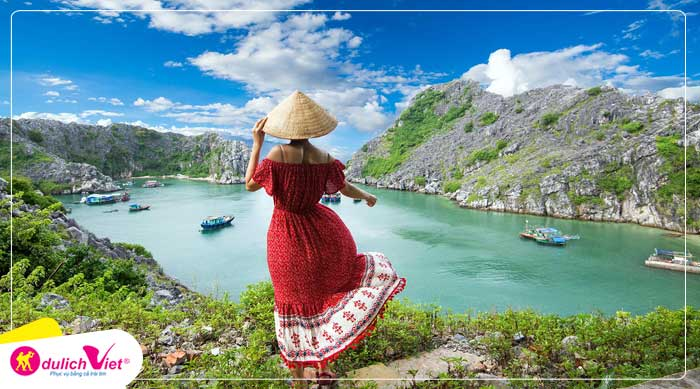

Du lịch Hà Nội - Đảo Cát Bà - Vịnh Lan Hạ dịp Lễ 30/4 từ Hà Nội

Back
Du lịch Đảo Cát Bà Đảo Cát Bà là tên một hòn đảo chính thuộc quần thể huyện đảo gồm 367 đảo lớn nhỏ, rộng khoảng 100km², cách cảng Hải Phòng 30 hải lý, nằm ở phía nam của Vịnh Hạ Long, tạo nên một quần thể đảo và hang động trên biển làm mê hồn du khách. Đến với Đảo Cát Bà du khách sẽ được tận hưởng không khí trong lành và hoà mình vào với thiên nhiên tươi đẹp, những bãi cát trắng mịn với làn nước trong xanh, khám phá thiên nhiên huyền bí qua những cánh rừng nguyên sinh cùng các di tích lịch sử trên đảo...